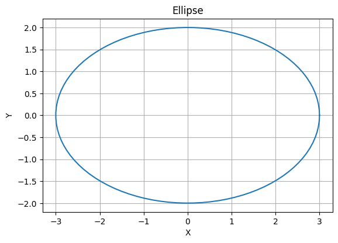

5. パラメータ表示された曲線#
5.1. 曲線のパラメータ表示#
今までは方程式で表される図形の形を見てきました。たとえば、
定義／曲線のパラメータ表示
平面上を動く点を考え、その時刻\(t\)における点の座標を\((x(t),y(t))\)としたときに、この動点の軌跡で表される曲線をパラメータ表示された曲線という。
実際に例を見てみよう。まず、半径\(r\)の円のパラメータ表示は
(5.1)#\[\begin{equation}
\begin{pmatrix}
x \\ y
\end{pmatrix}
=
r
\begin{pmatrix}
\cos \theta \\
\sin \theta
\end{pmatrix}
\end{equation}\]
になります。さらに、楕円については、その横の比率を与える変数を与えれば良いので、
(5.2)#\[\begin{equation}
\begin{pmatrix}
x \\ y
\end{pmatrix}
=
\begin{pmatrix}
a\cos \theta \\
b\sin \theta
\end{pmatrix}
\end{equation}\]
のようになりますね。
ここでポイントとなるのは…
とりあえず、一度書いてみましょう。 下は\(a,b\)の値を複数変えた楕円です。
import numpy as np
import matplotlib.pyplot as plt
import matplotlib.collections
import matplotlib.animation
import matplotlib.colors
from IPython.display import HTML
# ここを書き換えてください。
a = 3 # x方向の大きさ
b = 2 # y方向の大きさ
def draw_ellipse(a, b, angle, center=(0, 0)):
# Create an array of angles
theta = np.linspace(0, 2 * np.pi, 100)
# Parametric equations for ellipse
x = a * np.cos(theta)
y = b * np.sin(theta)
# Rotate the ellipse by the specified angle
x_rot = x * np.cos(angle) - y * np.sin(angle)
y_rot = x * np.sin(angle) + y * np.cos(angle)
# Translate the ellipse to the specified center
x_rot += center[0]
y_rot += center[1]
# Plotting
plt.plot(x_rot, y_rot)
plt.gca().set_aspect('equal', adjustable='box')
plt.xlabel("X")
plt.ylabel("Y")
plt.title("Ellipse")
plt.grid(True)
plt.show()
# Example usage with parameters a=3, b=1, angle=45 degrees, center at (0, 0)
draw_ellipse(a, b, 0)

5.2. パラメータ表示された曲線の例#
5.2.1. アステロイド#
アステロイドは半径\(a\)の円\(C_1\)に、内接する半径\(b\)の中心の軌跡である。パラメータ表示すると、
(5.3)#\[\begin{equation}
\begin{pmatrix}
x \\ y
\end{pmatrix}
=
\begin{pmatrix}
a\cos ^3 \theta \\
a\sin ^3\theta
\end{pmatrix}
\end{equation}\]
になります。
# following code cannot be executable
## 外周円の半径
"""
a_outer = 3
def ast(t):
return a_outer * (np.cos(t)) ** 3, a_outer * (np.sin(t)) ** 3
def draw_step(h, ax, eta):
artist = []
xt, yt, gt = h['x'], h['fx'], h['gx']
y0 = yt - xt * gt
y10 = (10 - xt) * gt + yt
lines = [
[(0, y0), (10, y10)],
[(xt, yt), (xt - gt * eta, yt)]
]
lc = matplotlib.collections.LineCollection(lines, color=['b', 'g'], lw=1)
artist.append(plt.gca().add_collection(lc))
artist.append(plt.vlines([xt], 0, 10, "red", linestyles='dashed', label=r"$x$"))
artist.extend(ax.plot([xt], [yt], 'ro'))
artist.append(ax.text(xt - gt * eta * 0.5, yt + 0.3, "${:.5f}$".format(gt * eta), ha='center'))
artist.append(ax.text(xt + 0.2, yt - 0.5, str(xt)))
return artist
t = np.linspace(0, 2*np.pi, 1000)
fig, ax = plt.subplots(dpi=100, figsize=(6, 6))
ax.plot(x, f(x), 'black')
ax.set_xlabel('$x$')
ax.set_ylabel('$y$')
ax.set_xlim(0, 10)
ax.set_ylim(0, 10)
ax.set_aspect('equal')
ax.grid()
artists = []
for h in H:
artists.append(draw_step(h, ax, eta=0.5))
ani = matplotlib.animation.ArtistAnimation(fig, artists, interval=500)
html = ani.to_jshtml()
plt.close(fig)
HTML(html)
"""